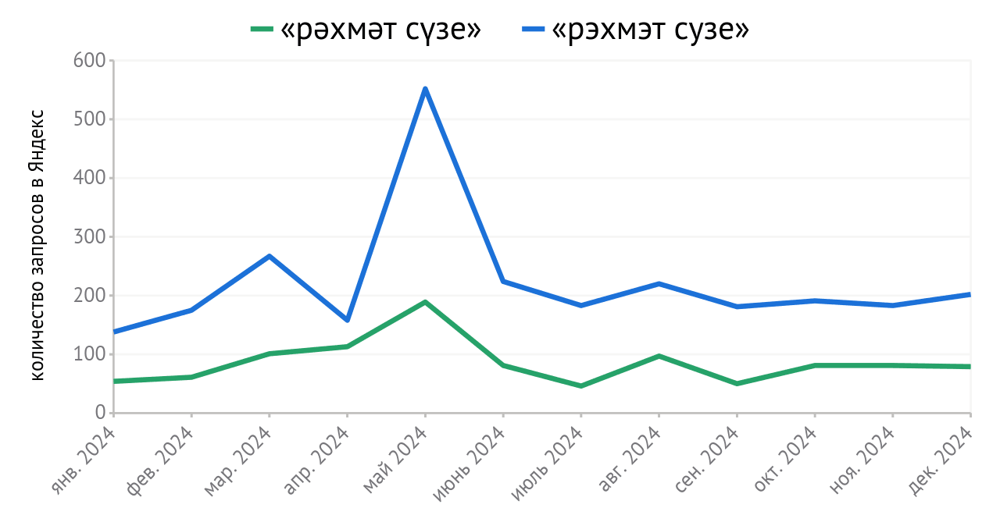

Русско-татарская объединённая раскладка клавиатуры
Что это?
Это новая раскладка клавиатуры, точно такая же как и русская, но с татарскими буквами в качестве альтернативных символов (с зажатым alt gr — правым alt). Татарские буквы находятся над своими русскими парами (alt gr + а для «ә», alt gr + н для «ң» и т.д.), таким образом их просто найти и не надо запоминать их расположение.
Русская (с татарскими буквами)
Для чего она нужна?
Для многих татар основным языком общения является русский, соответственно, и на устройствах у них стоит русская раскладка клавиатуры. Классическая татарская раскладка содержит все буквы русского языка, что в теории позволяет установить именно её и использовать для обоих языков, но расположение букв в ней отличается от привычного расположения букв в русской раскладке — татарская раскладка заточена под удобное письмо именно на татарском языке, а русские буквы, которые используются в татарском редко (ё, ж, ц, щ, ъ, ь), вынесены как альтернативные символы (для их написания нужно зажимать alt gr). Это делает неудобным письмо на русском языке, поэтому многие отказываются от использования классической татарской раскладки.
Татарская клавиатура
Такое положение вещей приводит к ситуации, когда татары не могут писать по-татарски, потому что в их системе нет нужной раскладки. Вот, например, как пользователи поисковой системы Яндекс ищут песню на татарском языке исполнительницы Алины Шарипжановой «Рәхмәт сүзе»:

Как видим, количество запросов в виде транслитерации в русский алфавит («рэхмэт сузе») значительно превышает количество запросов на татарском языке — люди в запросах чаще пишут татарские слова используя русскую раскладку.
Именно поэтому, новая русско-татарская объединённая раскладка клавиатуры в первую очередь является русской раскладкой — все русские буквы и специальные символы оставлены на тех же местах, что и в русской раскладке. Человек, поменявший русскую раскладку на русско-татарскую объединённую не почувствует никакой разницы, а значит — никакого дискомфорта, не нужно переучиваться или менять привычки, всё на старых местах. И в то же время, теперь появится возможность писать и на татарском, когда будет такая необходимость.
Ниже приложена таблица, которая показывает разницу между классической татарской и русско-татарской объединённой раскладками. В соответствующих столбцах указано, какие клавиши (в соответствии с русской раскладкой) нужно нажать, чтобы получить выбранную букву.
| буква | русская | татарская | русско-татарская объединённая |
|---|---|---|---|
| щ | щ | alt gr + щ | щ |
| ц | ц | alt gr + ц | ц |
| ъ | ъ | alt gr + ъ | ъ |
| ё | ё | alt gr + ё | ё |
| ж | ж | alt gr + ж | ж |
| ь | ь | alt gr + ь | ь |
| ә | - | щ | alt gr + а |
| ө | - | ц | alt gr + о |
| ү | - | ъ | alt gr + у |
| һ | - | ё | alt gr + х |
| ң | - | ж | alt gr + н |
| җ | - | ь | alt gr + ж |
Как видим, русско-татарская объединённая раскладка позволяет удобно писать по-русски, но оставляет возможность писать по-татарски, причём расположение кнопок очень легко запомнить. Это позволит без проблем отказаться от русской раскладки в пользу русско-татарской и не только писать поисковые запросы на татарском, но и использовать татарский в повседневном общении, сохраняя культурную идентичность и позволяя языку распространяться.
Что ещё есть в этой раскладке?
Создавая новую раскладку сегодня, хочется учитывать современные условия использования клавиатур. Поэтому русско-татарская объединённая раскладка клавиатуры основывается на русской с типографскими знаками — ещё одной новой раскладке.
Русская (с типографскими знаками)
Чтобы узнать подробнее, как формировалась русско-татарская объединённая раскладка клавиатуры, перейдите на соответствующую страницу:
Для мобильных устройств
Для мобильных устройств, где используется экранная клавиатура, принцип тот же — оставить всё как в русской раскладке, включая словари для быстрого ввода и исправлений, но добавить татарские буквы над соответствующими русскими. Дополнительные символы выбираются долгим нажатием: удерживать «а» для «ә», удерживать «н» для «ң» и так далее.
 я
ч
с
м
и
т
ьъ
б
ю
я
ч
с
м
и
т
ьъ
б
ю


Это всё ещё раскладка для русского языка, но с дополнительными символами для татарского.
Как установить?
Linux
Раскладки уже присутствуют в системе и установить их можно через настройки. Предварительно надо включить набор экзотических раскладок.

Если ваша система использует слишком старую версию xkeyboard-config (<2.38 для русской с типографскими знаками и <2.39 для русской с татарскими буквами), можно взять файлы с раскладкой здесь, а инструкцию включения в систему — здесь.
Windows
Можно установить описанные здесь раскладки в Windows скачав их по ссылкам ниже.
Скачанный архив надо распаковать, найти файл
setup.exe и запустить его. После того, как вы разрешите
исполнение файла и установка пройдёт успешно, нужная раскладка уже будет
выбрана в качестве одной из системных раскладок.

Если ваш браузер не позволяет скачать архив, вы можете собрать раскладку самостоятельно при помощи конфигурационного файла (ru+typo.klc, ru+tat.klc) и Microsoft Keyboard Layout Creator.
Но если вы (как и я) хотите добавить русско-татарскую раскладку в стандартную поставку Windows, то поддержите следующее предложение в Microsoft Feedback Hub:
MacOS
Можно установить русско-татарскую раскладку в macOS скачав её по ссылке ниже. Запустите скачанный файл и следуйте инструкциям. Русская типографская отсутствует, так как типографские символы уже присутствуют в стандартной русской раскладке macOS.

Попробовать в браузере
Попробовать эту раскладку можно прямо в браузере ничего не устанавливая и не настраивая — в специальной песочнице: